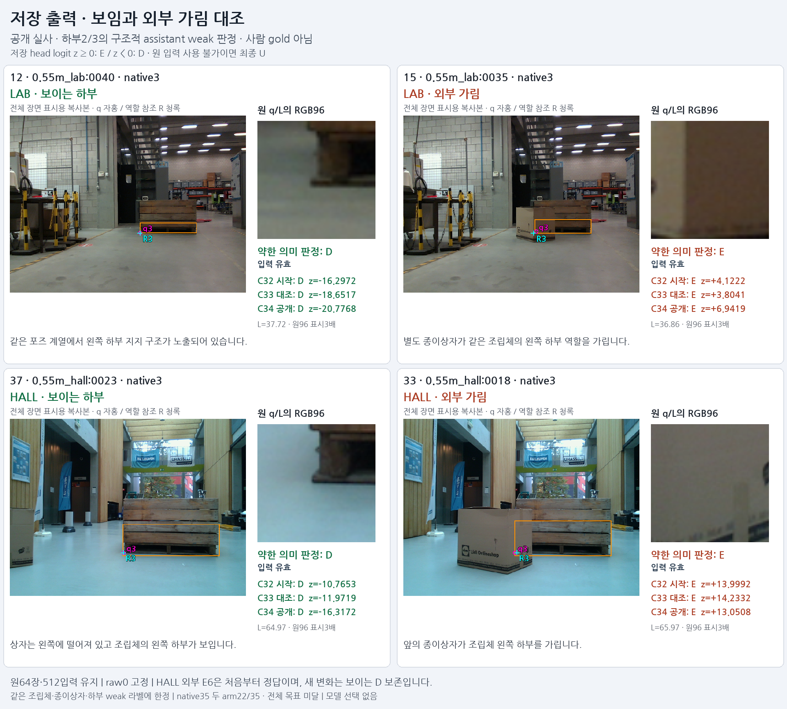
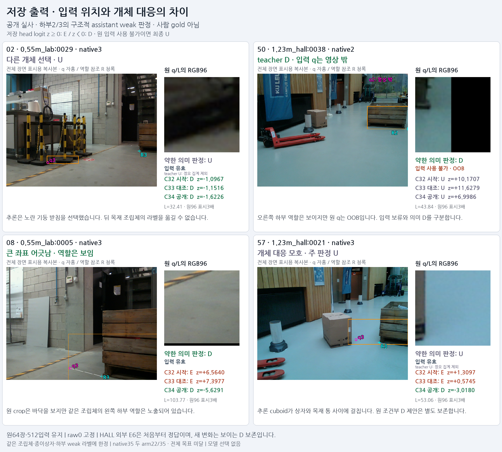

V148 · 완료된 저장 source 결과 · final2000 / raw logit0 고정
공개 실사에서 보이는 하부 보존은 개선됐습니다.
전체 목표는 아직 달성하지 못했습니다.
공개 역할 라벨을 추가한 C34는 HALL의 입력 가능한 보임 D를 33/33 맞혔습니다. 시작 모델은29/33, 같은 업데이트를 더한 대조 모델은28/33입니다. 외부 가림 E6개는 세 모델 모두 처음부터 정답이어서, 이번 새 이득은 보이는 D 보존입니다.
HALL 보임 D · 입력 유효
29 → 33 / 33
C32 시작 → C34 공개
HALL 외부 가림 E
6 → 6 / 6
초기부터 모두 정답
기존 native 조건 통과
22 / 35
C33·C34 모두 전체 기준 미달
같은 조건에서 공개 지도신호만 더했습니다
C33과 C34는 같은 C32 가중치에서 시작해 같은 native 표본 순서·optimizer·seed로 각2000번 갱신했습니다. 차이는 공개 TRAIN43개(D35/E8)의 loss 계수0과1입니다. HALL은 학습 gradient에 사용하지 않았고, 원 q/L·첫 선택·crop·보류 flags를 유지했습니다.
HALL: 전체41개와 입력 유효39개를 구분합니다
HALL의 약한 정답은 D35/E6입니다. D2개는 원 q가 영상 밖이라 모델 입력 보류 U로 남습니다. 입력 유효39개는 D33/E6입니다.
공개 known84개 전체의 저장 출력
전체64장·512입력 중 약한 D70/E14만 아래 정확도 분모에 들어갑니다. 의미 미확정 U428은 정오 집계에서 제외하며 원행은 유지했습니다. 이84개에는 학습에 사용한 LAB43개도 포함됩니다.
초기 C32가 D를 E로 잘못 판단한6개는 C34에서 모두 회복했습니다. 같은 sequence에서 제공 T/K 값이 bitwise 동일한 D↔E 전환4쌍의 양끝 정답은3쌍에서4쌍으로 늘었습니다. 이 비교에서도 원래 q는 서로 다르며, image-only 고정-query 실험을 뜻하지 않습니다.
같은 포즈 계열의 보임·외부 가림 대조
원 저장96 crop과 초기 C32·C33·C34 raw score를 함께 표시했습니다. 원 q/L로 얻은 픽셀은 수정하지 않았습니다.

개체 대응·입력 보류·역할 보임은 따로 봅니다
다른 물체를 고른02와 대응이 모호한57은 의미 U라서 모델의 D/E 응답을 정답으로 세지 않습니다. 50은 teacher D이지만 원 입력 OOB라 최종 U입니다. 08은 원 crop이 바닥을 보더라도 같은 조립체의 기대 하부 역할은 보이는 사례입니다.

확인한 효과의 범위
같은 목재 통합 조립체·종이상자·하부2/3의 구조적 약한 라벨에 한정된 결과입니다. 사람 gold, 전체8점 정답, 다양한 실사 전이 성공을 뜻하지 않습니다. native35는 두 arm22/35로 미달이며 모델 채택은 없습니다.
조건부 축 정합과 scanAABB의34.5mm X outlier 한계는 유지했습니다. 가상 역할 참조까지의 거리는 정밀 physical GT 오차가 아니며 학습 필터나 재라벨링에 사용하지 않았습니다. LAB/HALL은 원 분할을 유지한 개발 노출 공개 자료군입니다. 이 단계는 현재 평가223장에 대한 성공을 주장하지 않습니다.
실행·독립 검산·원본 결과
성공 실행25096은 EXIT0, 두 arm 각2000 update입니다. 첫 실행22384는 학습 전 integer dtype byte 비교 guard에서 EXIT1이었고 update0/model call0인 실패 기록을 보존했습니다. 명시적으로 guard를 수리한 별도 실행이며 과거 기록을 덮어쓰지 않았습니다.
독립 감사는 원 ID/qL/보류·초기 parity·동일2000 draw·공개 계수0 gradient0·loss/exposure·최종 parameter/optimizer·source 지표를 검산했습니다. selected_model=null, current_allowed=false를 유지합니다.
결과 JSON · 독립 저장 결과 감사 · 84개 paired 진단 · 초기 오류6개 전수 · 동일 제공 T/K4쌍 · 첫 guard 실패 기록